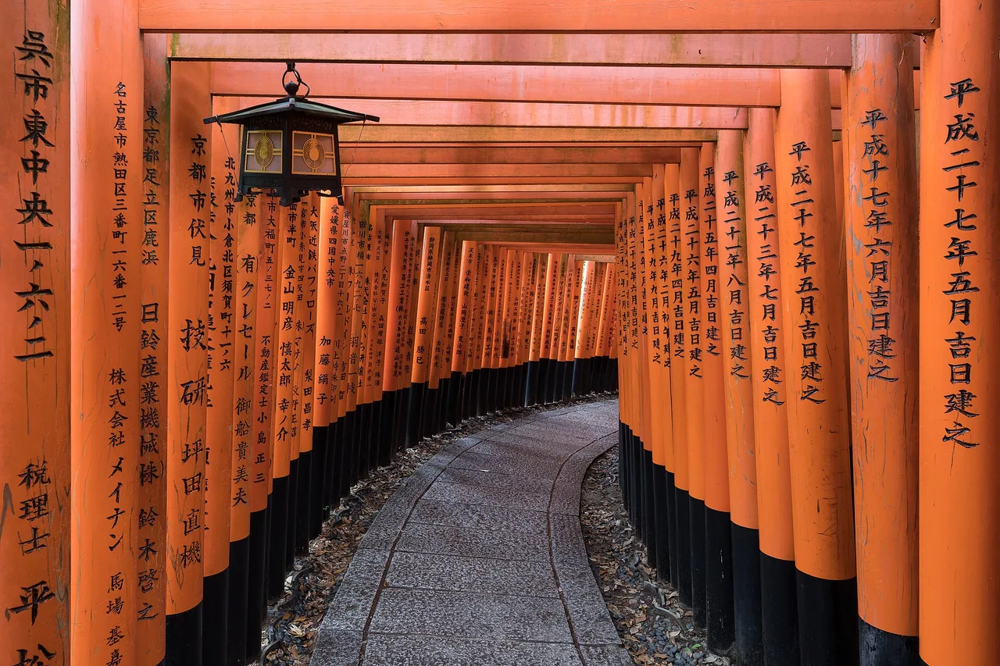

▶ KANSAI · KYOTO 京都
京都旅遊指南（日語學習者適用）
簡介
京都自794年至1868年間為日本皇都，幾乎每條街道都保留著封建時代的歷史痕跡，以擁有數千座朱紅色鳥居的伏見稻荷大社及金閣寺為代表。嵐山竹林與歷史悠久的祇園藝伎區，彰顯了京都作為日本文化核心的地位，同時孕育了精緻而富有季節感的京料理。
📍 首選景點：Fushimi Inari Taisha · 🥢 必吃美食：Kaiseki (Kyo-kaiseki) · 資料來源
日本千年古都——擁有1,600座以上的寺廟、藝伎區與竹林。這裡是全國的文化核心，也是最適合放慢腳步的地方。

🍜 美食 ▰▰▰▰▱ 🏯 文化 ▰▰▰▰▰ 🏙 城市 ▰▰▰▰▱ 🚄 交通 ▰▰▰▱▱ 🌿 自然 ▰▰▰▰▱
🥢 必吃：Kaiseki (Kyo-kaiseki) · 📍 必看：Fushimi Inari Taisha
東京給人的是活力，京都給人的是質感：苔蘚庭園、木造町家、線香與抹茶的氣息。京都自794年至1868年間為日本皇都，這段歷史至今仍清晰可見於幾乎每一條街道。著名景點人潮眾多，建議早起出發，並善用公車路線。
交通方式
京都以公車為主要交通工具，而非地鐵。市區公車網絡可抵達大多數寺廟，使用IC卡（ICOCA/Suica）即可搭乘。前往嵐山和伏見，搭乘JR或京阪電車更為快捷。租借自行車則是遊覽較平坦的中心區域的絕佳方式。
PR 京都熱門活動——建議提前預訂
以上部分連結為聯盟行銷連結，您無需額外付費，我們可能從中獲得佣金。我們只推薦自己也會使用的服務。
景點推薦
★ Fushimi Inari Taisha★ Kinkaku-ji（金閣寺）★ 嵐山竹林 & Tenryu-ji💎 Kurama-dera & 鞍馬至貴船山徑💎 大原 & Sanzen-in💎 高雄寺院群（Jingo-ji、Saimyo-ji、Kozan-ji）
- Fushimi Inari Taisha — 數千座朱紅色鳥居蜿蜒而上山坡（免費，全天開放）。
- 嵐山 — 竹林、渡月橋，以及西部的河畔寺廟群。
- Gion — 木造茶屋林立的歷史藝伎區；請保持禮貌，勿阻塞巷道。
- Kinkaku-ji — 金閣寺，倒映於池面之中。
美食推薦
★ Kaiseki（Kyo-kaiseki）★ Nishin soba（鯡魚蕎麥麵）💎 Saba-zushi（押壽司鯖魚壽司）💎 Demachi Futaba mamemochi💎 Kibune kawadoko 香魚 & 鱧魚料理
京都料理（「京料理」）精緻而富有季節感：湯豆腐、御番菜家常小菜，以及宇治各式抹茶甜點。錦市場是品嚐各式小吃的最佳去處。
學習日語
写真を撮ってもいいですか？
Shashin o totte mo ii desu ka? — 「請問可以拍照嗎？」（在 Gion 和神社必備用語）
交通用語
金閣寺へはどのバスに乗ればいいですか？
Kinkaku-ji e wa dono basu ni noreba ii desu ka? — 請問去 Kinkaku-ji 要搭哪路公車？
在地表達
お茶会に参加するにはどうすればいいですか？
Ochakai ni sanka suru ni wa dō sureba ii desu ka? — 請問如何參加茶道體驗？
PR 規劃您的住宿
以上部分連結為聯盟行銷連結，您無需額外付費，我們可能從中獲得佣金。我們只推薦自己也會使用的服務。
常見問題
Q. 在京都如何移動？
A. 京都以公車為主要交通工具，而非地鐵：使用ICOCA或Suica IC卡可搭乘市區公車抵達大多數寺廟，前往嵐山和伏見則搭乘JR或京阪電車更為快捷。
Q. 初次造訪京都應優先參觀哪些景點？
A. 建議從伏見稻荷大社（免費，全天開放）、嵐山竹林、祇園藝伎區，以及金閣寺開始。人潮眾多，建議早起出發。
Q. 京都有哪些著名美食？
A. 京都料理（京料理）精緻而富有季節感：湯豆腐、御番菜家常小菜，以及宇治各式抹茶甜點。錦市場是品嚐各式小吃的最佳去處。
資料來源：京都市官方旅遊指南 ·
japan-guide.com — Kyoto。
資訊已依官方旅遊來源核實；文中觀點為本站立場。